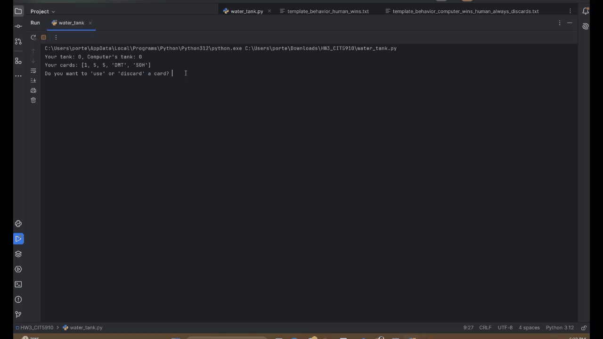
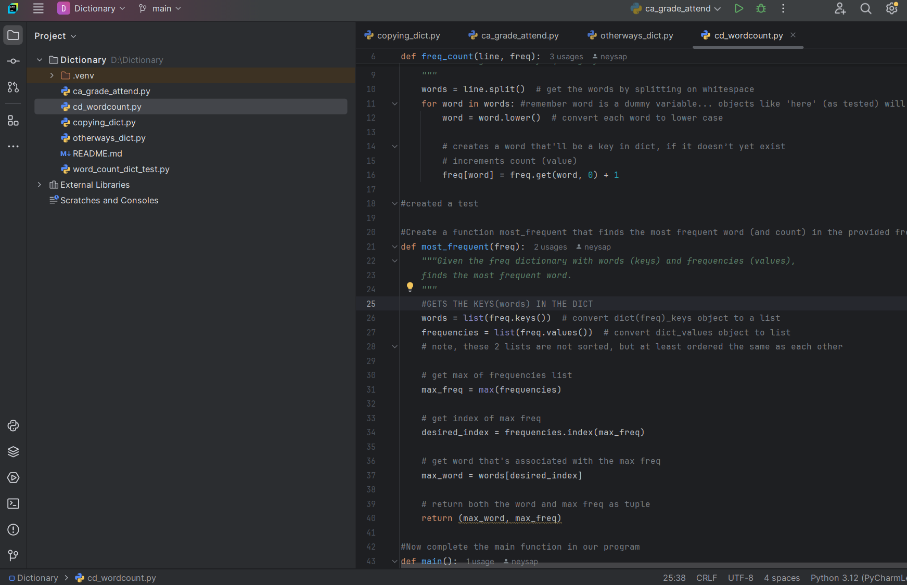

Neysa Porter's Portfolio
Data & AI/ML Systems | Software Engineer | Full-Stack Developer


Data & AI/ML Systems | Software Engineer | Full-Stack Developer

Built an NLP pipeline using large language models (GPT-5-mini) to extract structured data from unstructured biography text. Implemented both zero-shot and few-shot prompting strategies to evaluate the effectiveness of in-context learning on information extraction tasks. Designed prompt engineering workflows to generate standardized key-value outputs (e.g., name, birth date, nationality, occupation), and integrated an evaluation framework measuring precision, recall, and F1-score across 50+ samples. Improved model performance by debugging API behavior, optimizing prompt structure, and leveraging few-shot examples to increase extraction accuracy. Demonstrated measurable gains in model performance, achieving higher precision and recall through iterative prompt refinement. This project highlights skills in NLP, prompt engineering, model evaluation, and working with real-world LLM constraints in production-like environments.
View Project
Developed a machine learning pipeline for multi-class classification of food health ratings (Nutri-Score A–E) using the Open Food Facts dataset of 350,000+ records and 150+ features. Performed data preprocessing, feature selection, and missing value handling to build a clean modeling dataset. Trained and evaluated classification models including Logistic Regression and Random Forest, achieving up to 94% accuracy. Applied Principal Component Analysis (PCA) for dimensionality reduction and compared performance against baseline models. Conducted error analysis using confusion matrices and extracted feature importance to identify key nutritional drivers, including sugar, saturated fat, and salt.
View Project
A terminal card strategy game where you race the computer to fill your tank to 75–80 without spilling. Build with water cards (1/5/10) and play power cards—SOH (steal opponent’s half), DOT (drain opponent), DMT (double your tank)—while a simple heuristic guides the computer’s moves. Overflow “bounces” back if you overshoot 80, so timing your plays matters.
View Project
Small, readable scripts that practice core dictionary patterns plus a simple word-frequency tool, with unit tests.
View Project